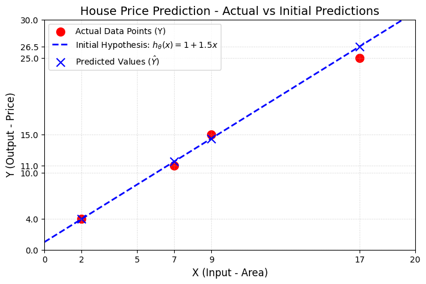
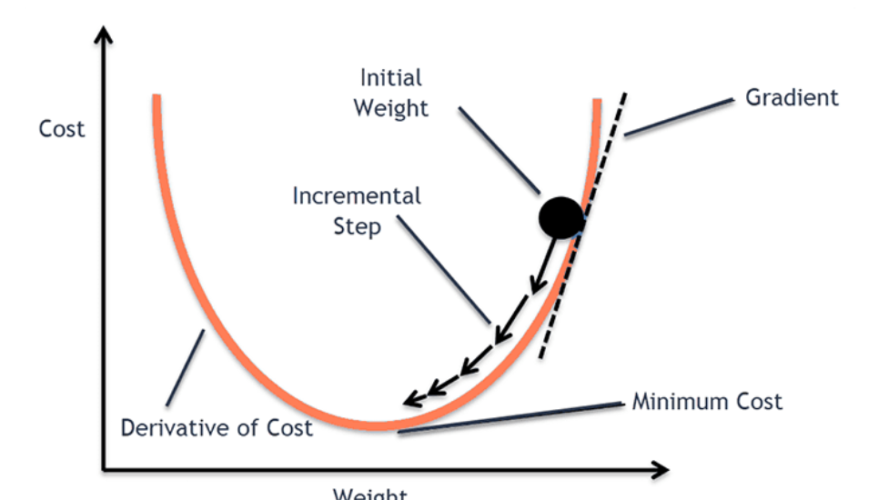
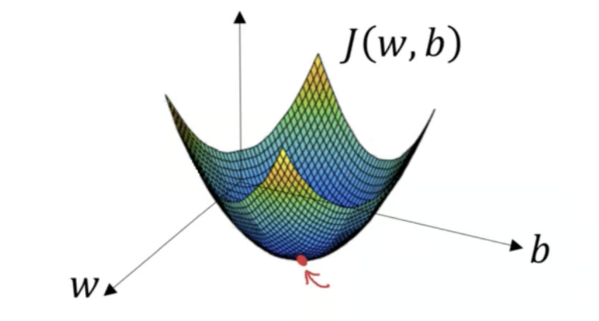

Master the mathematical mechanics of Linear Regression by walking through step-by-step calculations of Hypothesis functions, Mean Squared Error (MSE), and Gradient Descent parameter optimization.
Author
Md Muztahid Hassan
Published
June 19, 2026
In Machine Learning, we call the X data as input features/ Independent Variables and Y data as output features/ Dependent Variables.
Simple Linear Regression
We try to calculate the weights and biases of the model to predict the output feature Y. In mathematical terms, the linear equation is:
\[ y = mx + c \]
In machine learning, we will express the equation as:
\[ y = w_0 + w_1x_1 \]
Here:
- \(y\) is the output feature
- \(x_1\) is the input feature
- \(w_1\) is the slope
- \(w_0\) is the bias / intercept
This is the equation of simple linear regression.
Multiple Linear Regression
The equation of multiple linear regression is:
\[ y = w_0 + w_1x_1 + w_2x_2 + \dots + w_mx_m \]
Here:
- \(y\) is the output feature
- \(x_1, x_2, \dots, x_m\) are the input features
- \(w_1, w_2, \dots, w_m\) are the weights
- \(w_0\) is the bias / intercept
In machine learning, we follow the below procedures:
graph TD %% Training Phase X_Train[X Train] --> TD[Training Data] Y_Train[Y Train] --> TD TD --> LA[Learning Algorithm] LA --> H[Hypothesis / Model] %% Prediction Phase X_New[X Input] --> H H --> Y_Pred["Y prediction (Y-bar)"]
graph TD
%% Training Phase
X_Train[X Train] --> TD[Training Data]
Y_Train[Y Train] --> TD
TD --> LA[Learning Algorithm]
LA --> H[Hypothesis / Model]
%% Prediction Phase
X_New[X Input] --> H
H --> Y_Pred["Y prediction (Y-bar)"]
Hypothesis
The hypothesis is an equation of prediction. It comes from straight line formula, \[ y= mx+c \]
This is for linear regression. But for other models, the hypothesis is different.
For linear regression, the hypothesis is:
\[ h_\theta(x) = \theta_0 + \theta_1 x \]
Example: House Price Prediction Dataset
Suppose we have a dataset for predicting house prices based on area, where:
- \(X\) is the input feature (Area)
- \(Y\) is the output target (Price)
\(X\) (Area)
\(Y\) (Price)
7
11
2
4
17
25
9
15
We want to find the linear equation (the best fit line) for this dataset:
\[ h_\theta(x) = \theta_0 + \theta_1 x \]
Since we do not know the optimal values of \(\theta_0\) and \(\theta_1\) initially, we start by assuming initial values:
- Assume \(\theta_0 = 1\)
- Assume \(\theta_1 = 1.5\)
Using these parameters, we can calculate the predicted value \(h_\theta(x)\) for each row in the dataset:
These calculated values are our model’s predictions (\(\bar{Y}\) or \(\hat{y}\)).
import matplotlib.pyplot as pltimport numpy as np# Dataset pointsX = np.array([7, 2, 17, 9])Y = np.array([11, 4, 25, 15])# Create plotplt.figure(figsize=(8, 5))plt.scatter(X, Y, color='red', marker='o', s=100, label='Actual Data Points (Y)')# Assumed line: y = 1.0 + 1.5 * xx_line = np.linspace(0, 20, 100)y_line =1.0+1.5* x_lineplt.plot(x_line, y_line, color='blue', linestyle='--', linewidth=2, label='Initial Hypothesis: $h_\\theta(x) = 1 + 1.5x$')# Predicted points on the lineY_pred =1.0+1.5* Xplt.scatter(X, Y_pred, color='blue', marker='x', s=100, label='Predicted Values ($\\hat{Y}$)')# Customizing limits and ticks to match the visual sketchplt.title('House Price Prediction - Actual vs Initial Predictions', fontsize=14)plt.xlabel('X (Input - Area)', fontsize=12)plt.ylabel('Y (Output - Price)', fontsize=12)plt.xlim(0, 20)plt.ylim(0, 30)plt.xticks([0, 2, 5, 7, 9, 17, 20])plt.yticks([0, 4, 10, 11, 15, 25, 26.5, 30])plt.grid(True, linestyle=':', alpha=0.6)plt.legend()plt.show()

Actual vs. Predicted Values Table
Here is the comparison table displaying the input features, actual target values, and the calculated predicted values:
\(X\)
\(Y\)
Predicted
7
11
11.5
2
4
4.0
17
25
26.5
9
15
14.5
Cost Function (Mean Squared Error - MSE)
By comparing the predicted values (\(\hat{y}\)) and the actual target values (\(Y\)), we can see that there is some error in our initial predictions. The line from our first iteration does not pass through all the actual data points. To improve the model, we need to adjust the slope (\(\theta_1\)) and intercept (\(\theta_0\)) to minimize this error.
To measure how well our model fits the data, we calculate the loss and the overall cost using the Mean Squared Error (MSE) cost function.
Loss Function (for a single prediction)
\[ \text{Loss} = \left( h_\theta(x) - y \right)^2 \]
Where:
* \(m\) = total number of training examples (\(m = 4\) in our dataset)
* \(i\) = index of the training example
* \(h_\theta(x^{(i)})\) = prediction for the \(i\)-th example
* \(y^{(i)}\) = actual target value for the \(i\)-th example
Step-by-Step Calculation
Let’s calculate the cost \(J\) for our current model:
The Mean Squared Error (MSE) is \(0.34375\). Our goal in linear regression is to optimize \(\theta_0\) and \(\theta_1\) using optimization techniques (like Gradient Descent) to reduce this cost as close to zero as possible.
Gradient Descent Optimization
To reduce the error (cost), we use Gradient Descent. It is a cost optimization algorithm used to find the optimal weights and bias by iteratively moving toward the global minimum of the cost function. The algorithm automatically converges and stops once the loss reaches its minimal point.
In each iteration, we calculate the gradient of the cost function, update the parameters (\(\theta_0\) and \(\theta_1\)), and run the next iteration with the updated values. We repeat this process until the cost converges to its minimum.

gradient descent
For two-dimensional parameter spaces (like our simple linear regression), the loss surface is shaped like a bowl:

gradient descent 2D
Gradient Descent Equation
The general update rule for any parameter \(\theta_j\) is:
Where:
* \(\theta_j\) represents the weights or bias of the model.
* \(\alpha\) is the learning rate (typically set to a small value such as \(0.01\)). It controls the step size toward the minimum.
* Note: If \(\alpha\) is too large, the algorithm might overshoot the global minimum and fail to converge.
* \(\frac{\partial}{\partial \theta_j} J(\theta_0, \theta_1)\) is the partial derivative of the cost function with respect to \(\theta_j\), indicating the direction and magnitude of the steepest ascent.
Now, let us perform the 1st iteration of Gradient Descent to update our parameters. We begin by assuming initial values:
- \(\theta_0 = 1\)
- \(\theta_1 = 1\)
The linear hypothesis equation is: \[ h_\theta(x) = \theta_0 + \theta_1 x \]
This is how the iterations will continue, automatically updating \(\theta_0\) and \(\theta_1\) step-by-step, until the Mean Squared Error (MSE) cost function is minimized and the regression line reaches its best possible fit (global minima).
Summary of Loss Reduction
If we observe the cost value (\(J\)) across the iterations, we can see it decreasing gradually:
- Starting Point (Initial Parameters \(\theta_0=1, \theta_1=1\)): \(J = 10.5\)
- 1st Update (Updated Parameters \(\theta_0=1.04, \theta_1=1.4675\)): \(J \approx 0.205\)
- 2nd Update (Updated Parameters \(\theta_0=1.0387, \theta_1=1.4371\)): \(J \approx 0.162\)
This demonstrates that Gradient Descent is successfully minimizing the error at each step, moving the hypothesis line closer to the actual data points.